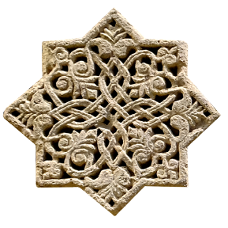

THE SPIRIT OF ARTSAKH
The tour starts early in the morning at 7:00 am. Your guide
will greet you at the lobby of your hotel and start a journey
through the spirit of Artsakh.
Mountains, rivers and springs, villages and magnificent
architecture yours to see. Artsakh is a family friendly travel
destination.
1-3prs.
4-7prs.
8-12prs.
000$
000$
000$
5 days
Price Includes



Schedule
DAY 1.
Hayravank. Dadivank. GandzasarDadivank and Gandzasar Monasteries are the most visited
places in Artsakh. Dadivank Monastery is situated on the
western bank of the Tartar River and is the largest complex
in Artsakh. Gandzasar is situated on the top of “Gandzasar”
mountain in Vank village, Martakert region. Lion cave
situated in the Vank village, a must see.
DAY 2.
Stepanakert city tour. Tigranakert& Askeran fortrass.
Stepanagert is the capital city of Artsakh. The "We Are Our
Mountains" monument is also known as "Tatik and Papik"
"Grandma and Grandpa" by the locals. Try this specialty of
Artsakh, the “Jingalov hats” hurb stuffed flatbread.
Tigranakert ancient Armenian city dating back to the
Hellenistic period. It was founded by the Armenian king
Tigran the Great, more than 2000 years old. Excavation of
this site started in 2005.
DAY 3.
Shushi . Ghazanchetsots. JdrduzShushi the town & fortress overlook the capital of Artsakh,
Stepanagert. With its museums & cafes and restaurants,
Shushi is a place to relax.
The Cathedral of Holy Saviour or Ghazanchetsots, and the
Holy Mother of God or Kanach Zham were inaugurated in
the 19th century.
Jdrduz is located in the upper part of the Hunot canyon, in
Shushi. With its incredible view of the canyon and the Karkar
river below. Just sit on a rock and enjoy the view.
DAY 4.
Khndzoresk. Tatev. Noravank. YerevanThe route takes us back to Armenia, to the ancient village of
Khndzoresk, with its suspended bridge, medieval chapel,
and its troglodyte houses. Then we'll head to Halidzor
village where you'll hop on the longest cable car in the world
covering a distance of almost 6 km. While enjoying
breathtaking views from above the Vorotan gorge, you'll
reach Tatev monastery complex, which is one of the largest
monasteries in Armenia.
Then return to Yerevan.
We continue the tour to Noravank Monastery, which is a
masterpiece of Armenian architecture, and the Monastery of
Khor Virap, a breathtaking view of Mount Ararat will be a
real reward for your eyes.